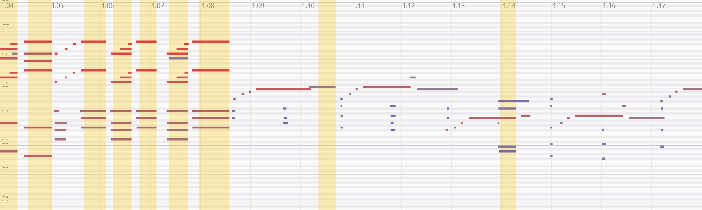
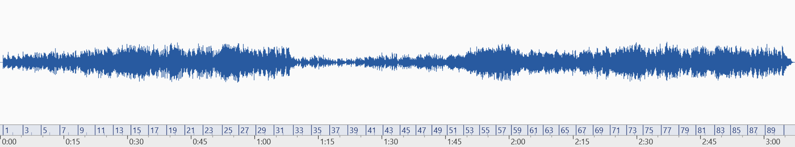
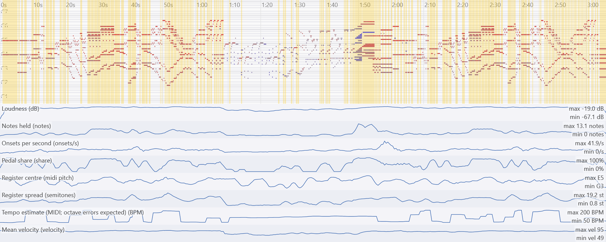

Piano roll and lanes
The question: which notes, how loud, how long, and where is the pedal?

12345- Red notes are loud. Colour is the key velocity, from blue (soft) through grey-violet to red (loud).
- Blue notes are soft.
- Yellow bands: the sustain pedal is down.
- Thin grey line: the bottom edge of a C (here C5). Striped rows are the black keys.
- The length of a note is how long the key is held. With the pedal down the sound goes on after it ends.
| Looks like | What it is | How to read and use it |
|---|---|---|
| Red, violet, blue bars | Notes; colour is velocity. Compare regions, not single notes: a red region beside a blue one is a real change of dynamics. | |
| Yellow band, full height | Sustain pedal down (CC64 at least 64). | |
| Blue strip at the very bottom | Soft pedal (una corda) down. | |
| Black outline on a note | Top line: the highest note of each onset group, after you run Top line. Often the melody, not always. | |
| Grey horizontal lines | C1, C2, C3 and so on. C4 is middle C. | |
| Faint vertical lines | Seconds (the spacing depends on the zoom). |
Waveform

The height is the peak level of the sound. It tells you about loudness and little else, but it is the quickest way to see the large shape of a performance.
Analysis lanes
Lanes are curves and marks drawn under the roll, on the same time axis. Feature lanes (in the structure panel) writes eight of them in musical units.

123456- Loudness in dB, from the audio.
- Notes held: keys down, without the pedal. The hump at 1:50 is the accompaniment filling up before the reprise.
- Onsets per second: how busy it is. The hump at 1:57 is the short cadenza.
- Register spread: narrow in the middle part.
- Tempo estimate: it jumps by factors. See the tempogram for why.
- Mean velocity: how hard the keys are struck.
| Looks like | What it is | How to read and use it |
|---|---|---|
| Blue curve | A measured series. Read its max and min at the right, then the shape. | |
| Blue bars | Intervals: something holds between two times. | |
| Hatched bars (overlap lanes) | A shared run below the flag threshold: ordinary idiom. | |
| Red bars (overlap lanes) | At or above the flag threshold: look at the source before you listen. A flag never means reject. |